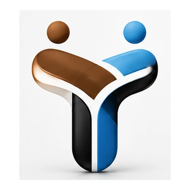

Yavu — Foundation
FJD 500
Build your digital foundation.
- Up to 5-page custom website
- 1 professional email mailbox
- 12 months website hosting
- Forms, WhatsApp, SEO & analytics
Tokani means friend in Fijian. We help businesses build the right digital foundation, improve the way customers are managed, and create stronger systems as they grow.

You should not have to buy technology you do not need yet. Tokani gives you a sensible place to start and a clear path forward.
Build your digital foundation.
Digitise how your business handles customers.
Build technology around your organisation.
We begin with the business — how you work, how customers reach you, where the friction is, and where you want to go.
“Use the right technology, at the right time, for the right reason.”
Sometimes that is a professional website and business email. Sometimes it is customer management and workflow. Sometimes it is a custom platform. The point is not to sell the most technology — it is to make the technology useful.
Why Tokani exists →We learn how your business works today, what customers experience and what is getting in the way.
We identify the simplest technology that genuinely improves the situation — including when the answer is “not yet”.
We configure, launch and hand over the agreed solution, then remain available as your needs develop.